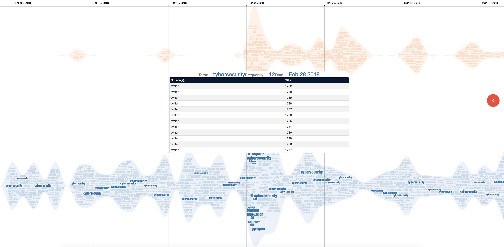

Recommendation: This visualization run best on Google Chrome and Safari.
1. Visual components
We have shown the main components of
IoTNegViz in our submitted manuscripts. Due to the limit of space for
presentation, the details can be found here. The following figures shows main components of
IoTNegViz: A)
The Utility component, B) The Topics stream, and C) The Dynamic network. Each negative aspect is represented by a
term in these visualization.
Box A - Utility component:
◦ Search toolbox offers autocomplete search suggestions listed below
◦ Use cases page shows the findings of the visualization and details
for visual components.
Demo page illustrates a demonstration with interactive tool of IoTNegViz.
◦ Display mode is default to present data by day. The Weekly
and Stack options can be both choosen at the same time. The Weekly option is for
displaying by week instead of day as default, and the Stack option is for stacking layers on top of each
other.
Box B - An area among the topic stream: Along with the timeline in the upper part of the
screen, there are two streams in this visualization: The
orange layer is for accidents that refer to the negative aspects, and the blue one is for the potential
risks may occur. The shape of the stream directly associates with the stream’s thickness, which indicates the
total frequency of the inside terms.
The significance of each word is constructed based on its frequency, then emphasized in the visualization by its
size and color opacity.
Button C and Box C - The Dynamic Network: When users click on the button, a dynamic graph
slides out. This is a force directed graph showing the connection and relationship between the negative
aspects. A term is considered significant if it has multiple connections with other items.
2. Terms in trending
When a term is moused over, the term is highlighted along with its corresponding terms in the same stream. A
detail box for tooltip pops up with the information: Term, date and frequency at that date. In the figure below,
cybersecurity is highlighted:
Vertically: The related terms with cybersecurity in the same
day (Feb 28, 2018) are also emphasized, such as analytics, ai (Artificial Intelligence), bigdata
, and sensors. Based on this presentation, users can capture the topic derived
from these relevant terms.
Horizontally: All the other cybersecurity terms in the same
stream are featured. From this illustration, users can see how often a term is mentioned throughout the
timeline, and its significance in each time step.

In the dynamic graph below, the more connection a node has, the more significant that term is. The terms
in red boxes are some of the most important ones due to their big amount of connections, depicting the various
relationships they have with other nodes in the same domain. They are
cybersecurity,
ai,
iiot
(Industrial Internet of Things),
gdpr (General Data Protection Regulation), and
ddos (Distributed Denial of Service).
The orange box shows the concerns related to the accidents that happened regrading to IoT:
autonomousvehicles,
crash,
accident and
safety. This also present the importance of raising awareness about the downsides of a cyber physical
system.
3. Groups of co-occurrence terms
The figure below shows two groups of co-occurrence terms, indicated by two group colors: green and red. The
co-occurrence depicts that these terms are relevant to each others, and there is an above-chance frequency based
on the relationships among them.
The group denoted by green boxes presents the co-occurrences of
accident,
travelalert and
crash.
The group denoted by red boxes presents the co-occurrences of
cybersecurity,
vulnerability, and
privacy